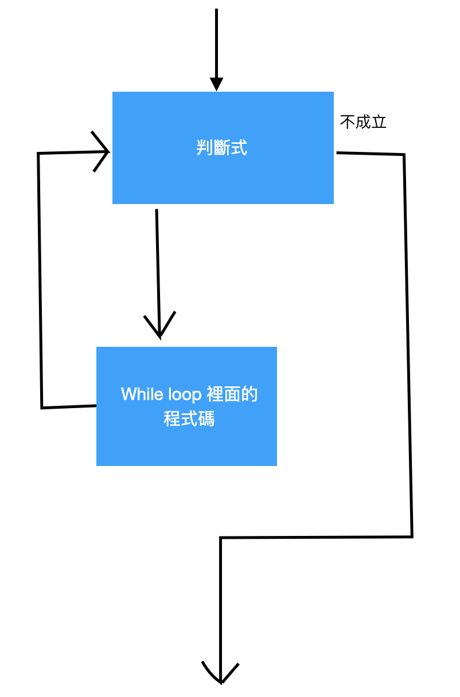

while loop
while loop 的語法是：
while(條件式)
{
..... //code
}
while loop 的基本流程：

我們用把之前for迴圈的例子變成while回圈吧！
要印出10次，I love while loop可以這樣寫：
結果為：
一樣，如果可以用for迴圈作加法，while回圈也一定可以做到。
用while loop從1+2+3+....+100:
結果為：
練習一下：
試著分別用for loop和while loop計算1+3+5+7+9+......+999的值：
先偷偷跟你說答案是250000喔！～
ans for code:
for loop 的code:
while loop的code: